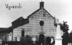

|
Descrizione
architettonica
La Pieve di Viguzzolo � da porsi, dal punto di vista architettonico, tra
tutti quegli edifici che, intorno all’XI secolo, hanno creato e definito
alcuni dei principali elementi dell’arte romanica.
La nostra chiesa plebana, una basilichetta semplice, romanica, costruita
a tre navate che terminano con tre absidi semicircolari, ha la copertura
caratteristica delle chiese con facciata monocuspidata e speroni laterali.
Osservandola dall’esterno possiamo vedere che il muro di prospetto
� decorato da archetti pensili divisi irregolarmente da sottili lesene.
Al centro di detto muro si apre la porta di accesso ad archivolto semicircolare
al di sopra della quale vi � un occhio circolare probabilmente costruito,
come il campaniletto posto sul timpano, in epoca più tarda rispetto a
quella della Pieve.
I muri laterali delle ali non presentano alcun segno di decorazione, mentre
quelli della navata centrale mostrano, spartiti regolarmente da lesene,
archetti del tutto simili a quelli della facciata e tre finestre a doppia
strombatura.
La stessa abside centrale, l’unica che ci � pervenuta intatta, presenta
archetti raggruppati tre a tre, divisi da lesene che vengono a formare
cinque sfondati, in tre dei quali sono poste finestrine absidali. Un’altra
apertura a forma di croce si trova nel timpano situato sopra l’abside.
La Pieve fu realizzata con una muratura formata di parecchia malta posta
tra frammenti di cotto molto probabilmente recuperato da altre costruzioni.
Alcune parti di muratura sono caratterizzate da ciottoli posti quasi orizzontalmente
che, in alcuni tratti, assumono una disposizione a spina-pesce. Questa
tecnica di costruzione non � solo tipica della nostra Pieve, ma di parecchie
chiese plebane della prima met� dell’XI secolo ed uno degli elementi
che ci fa supporre che essa sia stata costruita proprio in quel periodo.
All’interno, la nostra Pieve, � divisa in tre navate: due navate
laterali piccole e una centrale più grande. Quest’ultima � sorretta
da quattro arcate per parte che appoggiano su pilastri di forma quadrangolare
con semicolonne addossate e contrapposte. Questi pilastri hanno una forma
molto semplice; se noi la confrontiamo con la struttura di quelli di chiese
plebane di cui conosciamo la data esatta di costruzione, simili alla nostra
e più o meno dello stesso periodo, possiamo ricavare elementi utili a
stabilire con una certa precisione l’anno di costruzione della Pieve.
Dal confronto della sezione dei sostegni delle arcate della navata centrale
della nostra Pieve con quelle dei pilastri della chiesa di Lomello costruita
nel 1025, e di Montalino, del 1035, possiamo notare, a prima vista, che
le sezioni seguono una evoluzione in questo ordine: sezione dei pilastri
di Viguzzolo, di Lomello e di Montalino. Quindi, molto probabilmente,
anche la nostra Pieve fu costruita prima di tutte le altre sopracitate
e la sua data � da considerarsi di poco anteriore al 1025.
Nella navata centrale possiamo notare due tipi di decorazione posti tra
un’arcata e l’altra. Un tipo, costruito da frammenti di cotto
trapezoidali che si aprono a ventaglio su una formella circolare sempre
di cotto, si trova sui primi due pilastri posti verso l’ingresso.
L’altro tipo costituito da due iscrizioni mortuarie � posto tra le
ultime arcate verso l’abside. Il frammento di destra � indecifrabile
per la sua incompletezza ma, molto probabilmente, non ha alcun riferimento
con la Pieve e fu usato come decorazione per creare una perfetta simmetria
con quello di sinistra. Quest’ultimo � completo e potrebbe risalire
al VII o all’VIII secolo e, sia perch� venne murato nel pilastro
delle Pieve al momento della sua costruzione, sia per il suo contenuto,
dimostra una certa relazione con la nostra chiesa plebana, come quasi
si fosse dovuto mantenere una continuit� nel culto. Tale continuit� potrebbe
testimoniare l’esistenza di una chiesa sorta precedentemente nelle
adiacenze della nostra Pieve.
Le tre navate terminavano con tre absidi: quella centrale � rimasta intatta,
quella di sinistra � stata ricostruita nel 1935 sui resti dell’originaria
e quella di destra attesta la sua presenza con tracce piuttosto evidenti
sia all’interno sia all’esterno. L’abside centrale presenta,
al di sopra delle finestrine, resti di affresco che risale quasi certamente
all’XI secolo. Si notano due piedi, un lembo di una veste appartenente
ad una figura centrale che poteva rappresentare un Cristo Pantocratore
circondato da figure di Santi.
Lungo la pilastrata della navata di destra si apre una ripida e rozza
scaletta che conduce alla cripta, che si estende sotto ad una met� della
navata centrale e sotto l’abside maggiore.
Essa � formata da tre navatine che si appoggiano su sei piccole colonne
di pietra. I capitelli di queste colonnine del tipo cubico pre-lombardo
con angoli smussati, farebbero pensare che la cripta sia anteriore alla
Pieve e cos� una pietra pulviniforme, che da una parte, potrebbe richiamare
elementi bizzantini e, dall’altra potrebbe essere un particolare
del tutto occasionale dal momento che � propria di una sola colonnina.
Le volte sono a crociera, molto rozze (anche questo elemento potrebbe
far pensare che la cripta sia molto più antica della Pieve) e sono appoggiate
su colonnine di cotto ricavate, in corrispondenza dei filari delle colonne,
nei muri perimetrali. In questi ultimi vi sono anche delle piccole nicchie
rettangolari di mattoni, la cui funzione resta imprecisata.
Dalla parte opposta dell’apertura che costituisce l’entrata,
vi � un vano che, molto probabilmente, serviva per deporre le suppellettili
per il culto.
A causa di molti elementi più antichi rispetto alla Pieve, verrebbe spontaneo
credere che la cripta risalga a molto prima dell’XI secolo per�,
pur essendo molto difficile stabilire una data esatta, considerando la
grandezza della cripta, la tecnica avanzata delle colonnine poste sui
muri perimetrali, alcune grosse pietre che si vedono nella parte destra
di essa e che sono la fondazione del cantonale dell’abside superiore
e le tracce dello zoccolo dell’affresco dell’abside centrale
della Pieve, che scende di quaranta centimetri sotto il piano della volta
della abside della cripta, possiamo concludere che essa fu costruita posteriormente
alla chiesa plebana.
Proprio perch� crediamo che la Pieve del nostro paese, al di l� di ci�
che pu� rappresentare dal punto di vista affettivo per i Viguzzolesi,
abbia un reale valore di testimonianza di un determinato periodo storico
ed artistico, ci auguriamo che venga conservata con cura ed opportunamente
restaurata.
|
|
indice
presentazione
formazione delle pievi
cenni
storici
descrizione
architettonica

facciata
prima
del restauro
|